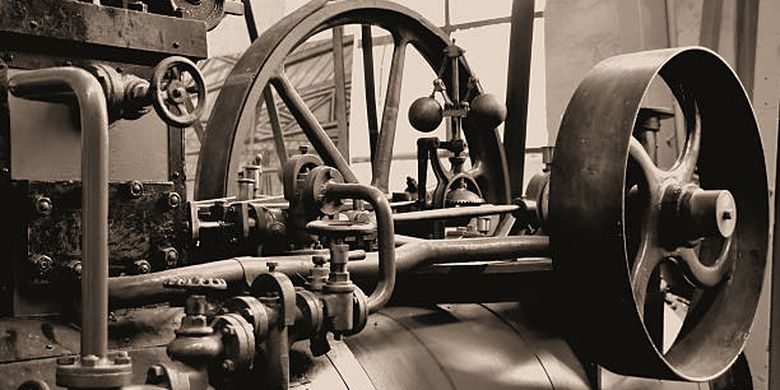

Revolusi Industri 2.0
Revolusi Industri 2.0 di awal abad ke-20 ditandai dengan penggunaan tenaga listrik, yang menggantikan mesin uap dalam berbagai sektor produksi. Penemuan pembangkit listrik dan motor pembakaran dalam memicu perkembangan teknologi baru seperti mobil, pesawat, dan telepon, yang mengubah cara manusia berkomunikasi dan bepergian. Dampaknya terlihat jelas dalam Perang Dunia II, di mana kemampuan untuk melakukan produksi massal menjadi faktor krusial dalam kemenangan. Industri mampu menghasilkan pesawat, tank, senjata, dan peralatan militer lainnya dalam jumlah besar dan dengan kecepatan tinggi. Revolusi ini juga melahirkan konsep assembly lines, yang diperkenalkan oleh Henry Ford, membuat manufaktur lebih efisien, mengurangi biaya produksi, dan meningkatkan jumlah barang yang dapat diproduksi dalam waktu singkat.
Ciri-Ciri Revolusi Industri 2.0
1. Produksi massal
2. peningkatan teknologi komunikasi
Dampak Revolusi Industri 2.0
1. Pengurangan biaya produksi
2. Pertumbuhan industri besar
3. Pekerja industri
Contoh Revolusi Industri 2.0
1. Mobil Ford Model T
2. Penemuan listrik